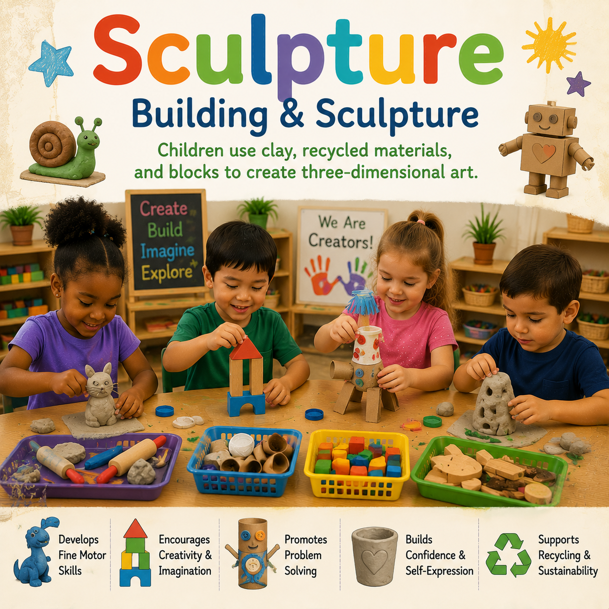
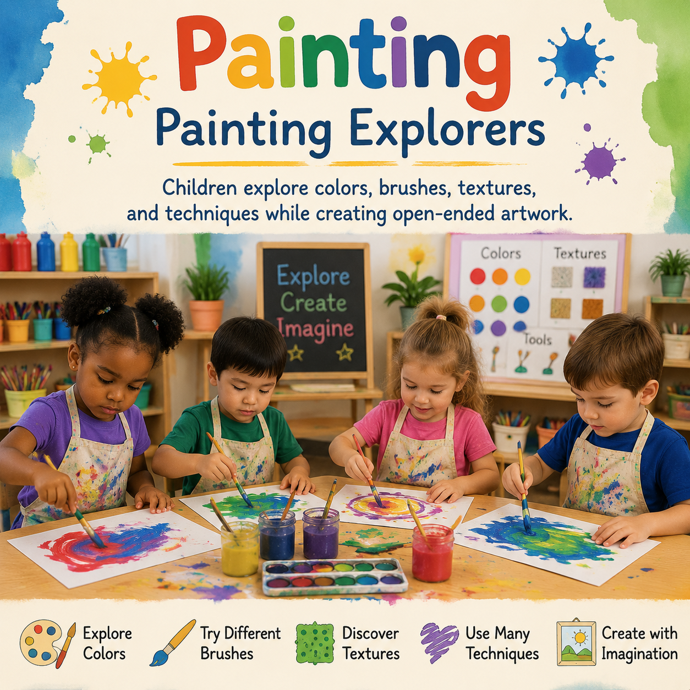

BUILDING
BUILDING🧱 Blocks
Building challenges and open-ended construction experiences that support spatial reasoning, creativity, problem solving, collaboration, and mathematical thinking.
Explore purposeful classroom learning experiences across blocks, art, writing, literacy, science, music, dramatic play, sensory learning, math, technology, and outdoor exploration.
Learning centers give children opportunities to make choices, explore materials, communicate ideas, solve problems, create, investigate, and build understanding through hands-on experiences.
Explore resources designed to help educators create inviting learning environments where children can learn through play, exploration, collaboration, and discovery.
Choose a center to find activities, setup ideas, materials, classroom invitations, and teaching supports.
BUILDINGBuilding challenges and open-ended construction experiences that support spatial reasoning, creativity, problem solving, collaboration, and mathematical thinking.
 CREATIVITY
CREATIVITYProcess art, creative materials, projects, and invitations that encourage expression, experimentation, fine motor development, and discovery.
 WRITING
WRITINGWriting tools, drawing experiences, mark making, name writing, storytelling, and invitations that support children's developing communication.
LANGUAGE & LITERACYBooks, storytelling, reading experiences, literacy materials, and language-rich activities that encourage conversation, comprehension, and a love of books.

SCIENCEInvestigations, observations, experiments, questions, and hands-on discoveries that encourage children to explore how the world works.

MUSIC & MOVEMENTSongs, rhythm, movement, instruments, listening experiences, and musical exploration that encourage creativity, connection, and expression.
IMAGINATIONImaginative play setups, props, role playing, community themes, and storytelling experiences that support social development and language.
Hands-on experiences that engage touch, sound, movement, texture, and observation while encouraging exploration and discovery.
MATHEMATICSCounting, sorting, patterns, measurement, shapes, number sense, games, and hands-on experiences that build early mathematical reasoning.
TECHNOLOGYAge-appropriate technology tools, digital exploration, media experiences, and playful opportunities that support early technology literacy.
OUTDOOR LEARNINGNature exploration, movement, observation, outdoor investigations, and opportunities for children to discover and understand their environment.